The coordinator exposes exactly ONE tool to its caller, but internally acts as an MCP client of a second server — the diagram traces the full delegation chain and the real state-persistence bug found while building it.

| Node | Location | What it does |
|---|---|---|
| OPENSESSION | coordinator_server.py:diagnose_and_remediate_fleet() | Opens ONE persistent stdio_client session to the specialist and reuses it for every sub-call in this invocation — the real bug fixed here: an earlier version opened a FRESH session per call, which reset the specialist's in-memory state between every step. |
| HEALTHYCHECK | coordinator_server.py | A plain substring check: 'unhealthy' in health_response. This is what decides whether the expensive remediation path (restart + search + re-check) runs at all. |
| MUTATE | specialist_server.py:restart_instance() | Directly mutates the shared _INSTANCES dict in the specialist process's memory — because the coordinator reused the same session, the NEXT health check in this same call sees the mutation. |
| MATCHCHECK | specialist_server.py:search_incident_log() | A simple substring search across a hardcoded incident list — returns an explicit "no incidents found" string rather than an empty/ambiguous response when nothing matches. |
Health check finds it unhealthy → restart mutates the shared state → incident search runs → re-check reads the SAME session's now-healthy state.
HEALTHCALL → KNOWNCHECK(Yes) → HEALTHYCHECK(True) → RESTARTCALL → MUTATE → SEARCHCALL → RECHECKCALL → status=healthyThe coordinator's branch logic short-circuits entirely — restart and search are never called for an instance that's already fine.
HEALTHCALL → HEALTHYCHECK(False) → SKIP → RETURNLOG1An earlier version opened a NEW specialist subprocess for each of the 4 sub-calls — restart's mutation happened in a process that was immediately discarded, so the final re-check saw a FRESH, still-unhealthy specialist.
[BROKEN]: RESTARTCALL(session A, mutates A) → RECHECKCALL(session B, fresh) → still unhealthy — FIXED by reusing one session_INSTANCES) lives entirely in-process memory — a specialist server restart loses all fleet state, with no persistence layer.The specialist server holds fleet state (_INSTANCES) in the memory of whatever process is running it. Each fresh stdio_client session in the original buggy version spawned (or connected to) what was effectively treated as an independent specialist invocation for that call — so restart_instance()'s mutation happened in one session's specialist-side state, and the following search_incident_log() and re-check calls, made under new sessions, saw a specialist that never observed that mutation. The fix — one persistent session opened once and reused for all four sub-calls in the invocation — means every sub-call talks to the exact same specialist-side process and memory, so a mutation in step 2 is visible in step 4.
The current pattern — one coordinator session per specialist, held open for the invocation's duration — generalizes fine to N specialists as long as each specialist's session is independently managed (the coordinator would hold N open sessions concurrently, not reuse one session across different specialists). Where it breaks is coordination logic complexity: with N specialists, the coordinator needs to reason about partial failures (3 of 5 specialists responded, 2 timed out), potential ordering dependencies between specialist calls, and aggregating heterogeneous responses — none of which this two-agent demo needs to solve, but which is exactly the hard part of real multi-agent orchestration at that scale.
Substring matching is fragile to any phrasing change in either direction — if the specialist ever rephrases its response (e.g. 'not healthy' instead of 'unhealthy', or includes the word 'unhealthy' inside an unrelated sentence like 'previously unhealthy, now recovered'), the coordinator's logic silently breaks or misfires. I'd replace free-text health responses with a structured, typed response (a JSON object with an explicit status: healthy | unhealthy | unknown enum field) — MCP tool responses can and should carry structured data, not just prose, specifically so downstream logic like this health-gate doesn't have to parse natural language to make a control-flow decision.
As built, the coordinator's session to that specialist would fail on the next call (a broken pipe / connection error from the stdio transport), and there's no retry, reconnection, or partial-state recovery logic — the invocation just fails, and because specialist state is in-memory only, any progress (the restart that already happened) is invisible to a fresh specialist process on reconnect. A production version needs: specialist-side state persistence (so a restart doesn't lose fleet state), coordinator-side retry with idempotency awareness (don't re-restart an instance that already restarted, blindly), and a clear partial-failure signal back to whatever called the coordinator, rather than a bare connection exception.
It's an encapsulation boundary — the caller of the coordinator's exposed tool shouldn't need to know that remediation internally involves a health check, a conditional restart, an incident search, and a re-check; they should be able to ask for 'diagnose and remediate this fleet issue' and get a result. This mirrors good API design generally: the coordinator's one exposed tool is the stable, meaningful contract, while the specialist's four granular tools are implementation detail that can be refactored (reordered, made conditional, replaced) without breaking anyone calling the coordinator — exactly the same reasoning that motivates hiding internal microservice calls behind a single external API gateway endpoint.